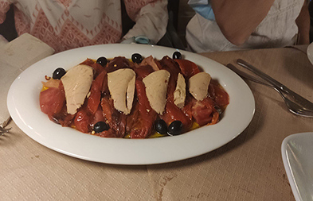
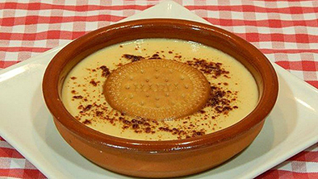

Mandonguilles amb tomaquet

Ingredients:
Carn picada Pastanaga 2 grans d’all 2 ous Vi blanc Ceba Pa ratllat Farina Oli d’oliva virgen extraPreparació:
1.Triturem la ceba i la pastanaga i xafem els alls.
2.Les posem al foc i esperem a que es posin amb un tó daurat i mentres tant, anem fent la massa de les mandonguilles.
3. Desprès, posem el vi blanc al foc per que doni una mica de sabor i no parem de donar-li voltes per a que no es cremi.
4. El seguent pas, posem en un bol la carn picada, dos troços de pa de motlle, el pa ratllat i dos ous i començem a barrejar.
5. Després, li donem forma rodona i les posem en farina.
6. Un cop donada la forma les posem en una paella amb la salsa de verdures.
7.Per últim, esperem que es facin les mandonguilles i les posem en un plat.
Salmó amb salsa de nata

Ingredients:
Salmó Nata 2 grans d’all Ceba Sal OliPreparació:
1. Primer, posem la planxa a escalfar i quan agafi una temperatura alta, posem el salmó ha fer-se.
2. Mentres tant, triturem la ceba i els 2 grans d’all, peró abans i ha que pelar-los, i mentres esperem a que es fagi el salmó.
3. Posem una mica d’oli a la paella i posem els ingredients triturats i no parem de donar-li voltes.
4. Després, li posem la nata a la paella i el sabor dels ingredients triturats s’ajuntara amb el de la nata.
5. Desprès, treiem el salmó de la planxa, amb cura de que no es trenquin, les posem en un plat i li posem una mica de sal.
6. Per últim, posem la salsa de nata per damunt del salmó, fins que tot quedi tapat.
Cuixetes de pollastre

Ingredientes:
Cuixetes de pollastre Sal 2 grans d’all Ceba 1 llauna de cervesaPreparació:
1. Primer, posem a calentar el forn a una temperatura elevada i desprès posem les cuixetes de pollastre a una safata i el posem a dins.
2. Mentre, que les cuixetes de pollastre s’està fent al forn, començarem a fer la salsa amb 2 grans d’all, ceba i una llauna de cervesa, per donar-li sabor.
3. Una vegada, posem tots els ingredients a la paella, i no parem de donar-li voltes, perquè si no es cremara.
4. Per últim, una vegada les cuixetes de pollastre ja estan fetes, les treiem del forn i les posem en un plat, i posem la salsa que hem fet al damunt de les cuixetes de pollastre.
Pop a la gallega amb patates

Ingredients:
Pop 1 Patata Sal Pebre roig Oli de girasolPreparació:
1. Posem aigua en una cassola i la posem al foc.
2. Li donem cops contra la pica al pop durant una estona, per ablanir-ho, amb un corró.
3. Ho posem a la cassola quan l’aigua bulli i el deixem una estona, perquè es faci per dins.
4. Una vegada treiem el pop de la cassola, esperem a que es refredi i desprès el tallem.
5. Desprès, una vegada tallat, tallem la patata en trossos.
6. Per últim, ho possem tot en un plat i li posem sal i oli i per damunt una mica de pebre roig.
Escalivada
Ingredients:
Pebrot vermell Olives negres Tonyina Sal Oli d’olivaPreparació:
1. Primer, tallem el pebrot en tires i les fem en una paella, tenint en compte de que no es cremi.
2. Desprès, posem el pebrot vermell en un plat i li posem la tonyina damunt, treient l’oli que té.
3. Per últim, posem les olives negres al voltant i posem una mica de sal i d‘oli d’oliva.
Espagueti amb bacó

Ingredients:
Espagueti Bacó Nata o llet evaporada Formatge ratllat parmesà Oli Sal i pebrePreparació:
1. Posem un cassó amb aigua i sal, quan comenci a bullir afegim la pasta i la deixem coure.
2. Posem una paella a foc mitjà amb una mica d’oli, tallem el bacó a trossets i ho saltegem,
quan veiem que agafa una mica de color hi posarem la nata líquida, remenem i anirem tirant el formatge ratllat i seguim
remenant, si queda molt espessa la salsa li podem posar una mica de llet.
3. sal i pebre.
4. Quan la pasta estigui cuita la traiem i escorrem bé.
Pastís de formatge amb maduixa

Ingredients:
Galetes Mantega Maduixes Sucre Suc de llimona Gelatina Formatge crema Nata per muntar Essència de vainillaPreparació:
1. Afegim les galetes trossejades, posem la mantega i l’escalfem, un cop desfeta ho afegim al got i ho triturem tot.
2. Posem les galetes i premsem, procurant que quedi tot ben premsat. Tallem les maduixes i les posem.
3.Agafem maduixes i les triturem i les fem puré. Agafem un bol hi afegim el formatge crema i el sucre i ho escalfem, ho barregem tot i li afegim la gelatina, veurem que la gelatina es desfà, tot seguit afegim el purè de maduixes i una cullereta d’essència de vainilla.
4. En un altre bol li afegim la nata, ho batem i quan comenci a muntar-se li afegim sucre. Li anem afegint mica en mica la mescla de maduixes i formatge crema, sense deixar de batre.
5. Ara cal desemmotllar el pastís, amb molta cura. Ho servim en un plat i ho podem decorar amb una maduixa oberta al damunt.
Crema Catalana

Ingredients:
Let Robell d’ou Sucre Maicena Corfa de llimona pell de taronja Sucre per a caramel·litzar Canyella en brutPreparació:
1. Començarem trencant els ous i separant la gemma de les clares.
2. En una olla posem la llet a escalfar amb la corfa de llima, de taronja i la branca de canyella. D’altra banda en un bol barregem removent bé, el sucre i la maicena, afegim les gemmes batudes i unim tot amb unes varetes.
3. Quan la llet esclafeixi a bullir vertemos la mescla de gemmes, sucre i maicena que la passarem per un colador gruixut. Removem i sense parar de remoure amb una vareta perquè no se’ns pegui fins que la mescla torni a bullir de nou. Bolquem en unes cazuelitas individuals.
4. Deixem refredar sense tapar i empolvorem amb la resta del sucre que haurem repartit entre les nostres cremes. recremem amb un bufador de cuina fins que el sucre es caramel·litzi.
Natillas
Ingredients:
Llet Canyella en brut Beina de vainilla Pell de llimona Rovell d’ou Sucre Midó de blat de moro (maizena) Galetes MaríaPreparació:
1. Col·locar la llet en un cassó amb la branca de canyella, la beina de vainilla que haurem obert amb un ganivet i la corfa de llima. Escalfar, portar a ebullició i apartar del foc.
2. Disposar els rovells d’ou amb el sucre en un bol i batre amb unes varetes. Afegir la maizena, batre bé i tirar la llet, barrejant amb les varetes.
3. Posar a escalfar un recipient i tirar la preparació. Escalfar, sense que l’aigua arribi a bullir, removent amb les varetes constantment, perquè no es pegui. Recordar que en calent la mescla serà sempre més líquida que quan refredi.
4. Omplir els recipients i deixar temperar. Col·locar una galeta María amb cura damunt de cada ració i portar a la nevera.
Pa de pessic

Ingredients:
Farina de rebosteria Sucre Sobre de llevat Ous Iogurt de llimona Llimona per ratllar Gotet d’oli Mantega per untar el motlle SalPreparació:
1. Agafem un bol i afegim els ous. Batem els ous.
2. Seguidament, afegim el sucre dins el bol i batem per barrejar.
3. Afegim el sobre de llevat. Just després afegim la farina però passada per un colador.
4. Agreguem el got d’oli. Batem la barreja.
5. Rallem la llimona i l’afegim juntament amb el iogurt de llimona. Batem altre un cop.
6. Un cop preparada la massa del bescuit untem un motlle amb mantega o oli i afegim la massa del pa de pessic.
7. Traiem el motlle del forn, retirem el pa de pessic del motlle, posem una mica de sucre glace i deixem refredar.